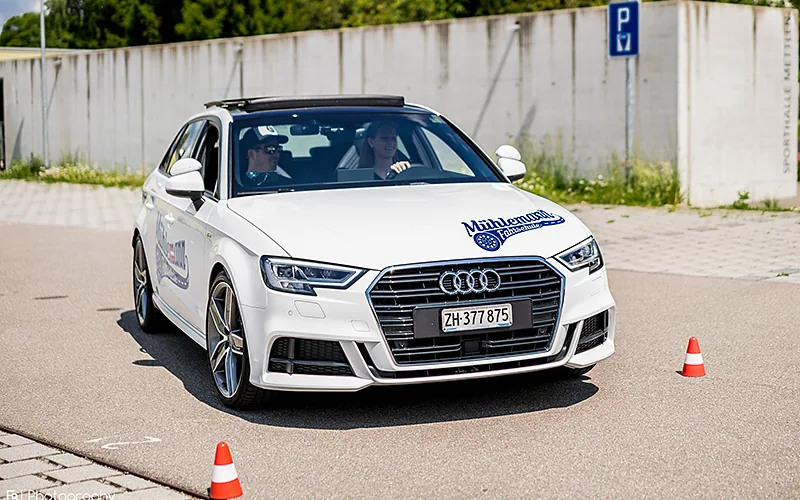
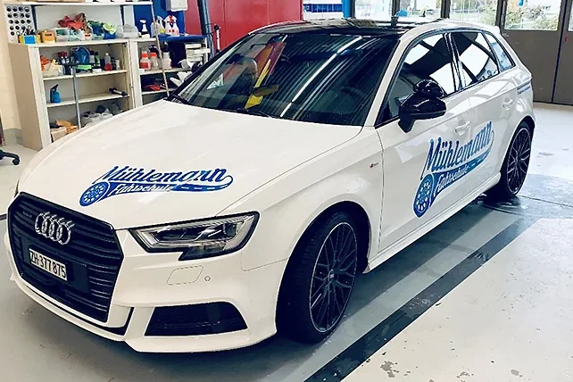
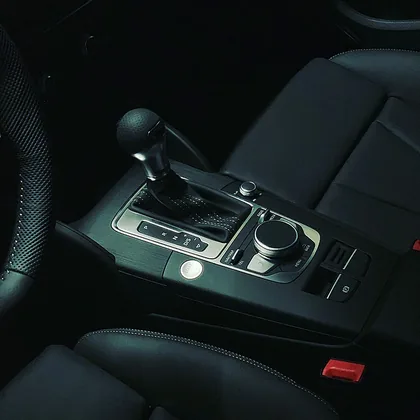

Seit Januar 2007 eigene Fahrschule in Pfäffikon ZH
Zwei Audi A3 mit gleichem Cockpit, Hand oder Automat
Eigenes Theorielokal für den Verkehrskundeunterricht
Fahrzeuge
Handschaltung oder Automat? Beides im gleichen Cockpit.
Ich unterrichte mit zwei Audi A3 Sportback. Sie entscheiden, womit Sie lernen.

Handschaltung
Audi A3 Sportback 1.4 TFSI S-Line
Getriebe
6-Gang manuell
Leistung
150 PS
Hubraum
1.4 Liter
Jahrgang
2017
«Ideal für Neulenkerinnen und Neulenker, da es auch den einen oder anderen Fehler in der Bedienung verzeiht.»
Gute Rundumsicht
Nicht zu gross
Bequem für Gross und Klein
Mit Kupplung und Schaltung umgehen zu können, lohnt sich. Man weiss nie, ob man es noch braucht: bei der Arbeit, in den Ferien oder in einem Notfall.


Automat
Audi A3 Sportback 40 TFSI quattro S-Line
Getriebe
S tronic (DSG)
Leistung
190 PS, Allrad
Hubraum
2.0 Liter
Jahrgang
2020
«Das ist mein neues Schmuckstück. Spass ist garantiert!»
Side assist (toter Winkel)
Lane assist (Spur halten)
Abstandstempomat
Den Automateneintrag (78) gibt es seit Februar 2019 nicht mehr. Wer nur Automat fahren will, kann von Anfang an damit beginnen.
Beide Autos sind in Form, Cockpit und Armaturen gleich. Wer zwischen Handschaltung und Automat wechselt, fühlt sich sofort vertraut und verliert keine Zeit mit Umgewöhnen.
Der gelernte Automechaniker erklärt auch, was unter der Haube passiert.
Ihr Fahrlehrer
Stefan Mühlemann
Staatlich geprüfter Fahrlehrer und WAB-Instruktor
Die Begeisterung für Autos und das Fahren war stets ein Teil meines Lebens. Automechaniker zu werden, war darum ein logischer Schritt.
Ich wollte aber mehr, vor allem mehr mit Menschen zusammenarbeiten.
In den Fahrstunden ist mir wichtig, dass Sie sich wohl fühlen und Spass beim Lernen haben. Die Qualität der Ausbildung steht dabei immer im Vordergrund.
2002Lehrabschluss als Automechaniker, danach vier Jahre in zwei Garagen (SAAB, HONDA)
2007Ausbildung zum Fahrlehrer abgeschlossen, seither eigene Fahrschule in Pfäffikon ZH
2022Weiterbildung zum WAB-Instruktor, seit November 2022 WAB-Kurse an der Transportschule
Jedes Jahr bilde ich mich weiter: Psychologie, Unterrichtsmethodik, rechtliche Kenntnisse, Fahrtechnik, Verkehrssinnbildung und umweltschonendes Fahren. Meinen Ausgleich finde ich beim Surfen, im Training und in der Fotografie.
Den obligatorischen Weiterbildungskurs besuchen Sie innerhalb von 12 Monaten nach der Prüfung. Ich bin Instruktor bei der Transportschule AG in Pfäffikon ZH, die Kurse finden von Montag bis Sonntag statt. Mitbringen: Führerausweis und ein eigenes Fahrzeug in betriebssicherem Zustand, ein Mietfahrzeug ist möglich.